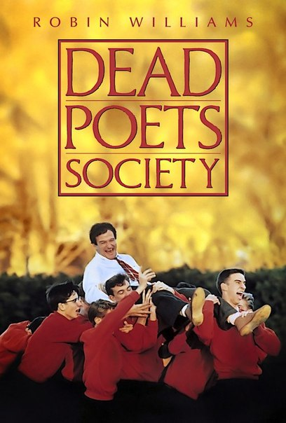
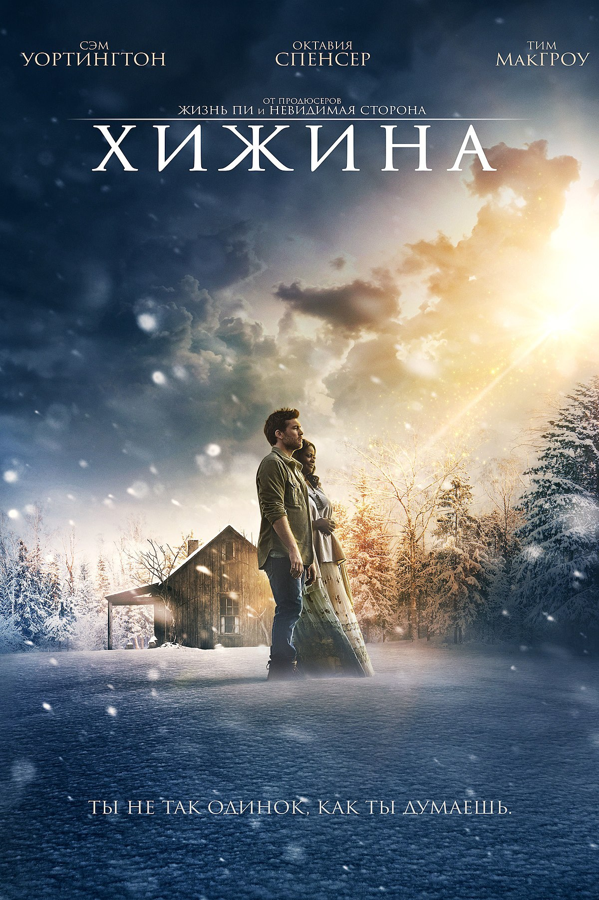
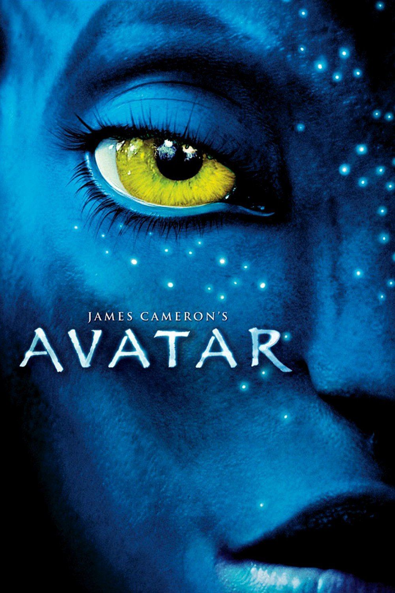

My Favorite Films:
Dead Poets Society (1989)
Genre: Comedy | Drama
with a different perspective of authentic knowledge and feelings.

3 Idiots (2009)
Genre: Comedy | Drama
They revisit their college days and recall the memories of their
friend who inspired them to think differently, even as the rest
of the world called them "idiots".
The Shack (2017)
Genre:Drama | Fantasy
A grieving man receives a mysterious, personal invitation to
meet with God at a place called "The Shack."

How the Grinch Stole Christmas (2000)
br/>Genre:Comedy | Family | Fantasy
who plans on ruining the Christmas holiday for all of the citizens of the town.

Avatar (2009)
Genre:Action | Adventure | Fantasy
mission becomes torn between following his orders and protecting
the world he feels is his home.
